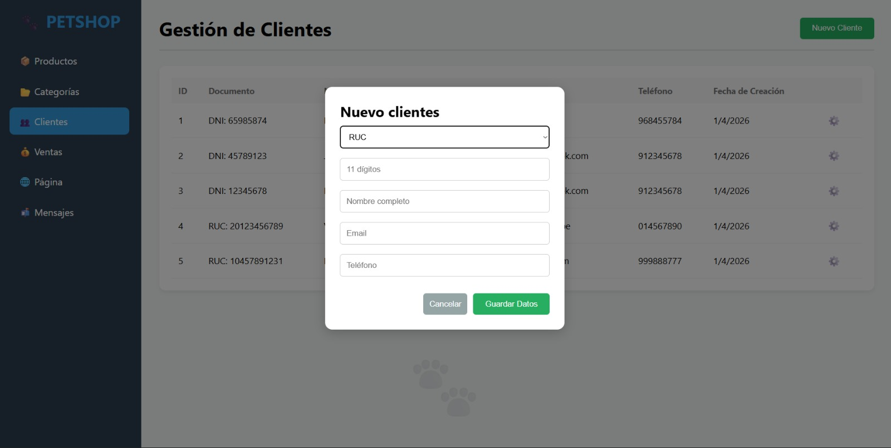

Gestión de productos y categorías
Permite registrar, editar y organizar productos mediante categorías, facilitando el control del catálogo y la administración del inventario.

Control de inventario en tiempo real
Actualiza automáticamente el stock después de cada venta o modificación, permitiendo un seguimiento preciso de la disponibilidad de los productos.
Registro y seguimiento de clientes
Administra las ventas realizadas, almacena el historial de transacciones y facilita el seguimiento de las operaciones comerciales.

Integración mediante API
El sistema utiliza servicios API para conectar el frontend con la base de datos, garantizando una comunicación rápida, segura y eficiente.

Mensajes desde la Página Web
Recibe y almacena automáticamente las consultas enviadas desde la página web, centralizando la comunicación con los clientes.

Integración con sistemas de pago
Toda la información del sistema se almacena en una base de datos estructurada, asegurando integridad, disponibilidad y fácil acceso a los datos.